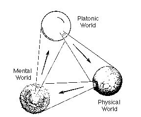

Others
{kind=link}
Here is a pic of me when I was around \(10\) years old.
If you want to email me any document, do not send '.doc'/'.docx' documents; send me a '.pdf' instead. Any email containing '.doc'/'.docx' as attachment is directed to my email trash.{kind=link}
{kind=link}
Three Logicians in a bar

|
Useful packages for academic purposes
Other Math Links:
Gauss PhD ThesisRiemann's \(1859\) manuscript
Typeset of Riemann's \(1859\) manuscript: German; English
A Mathematician's Lament
Zeilberger's opinions
Math Documentaries
Story of Maths: Part 1 Part 2 Part 3 Part 4Dangerous Knowledge: Part 1 Part 2
Fermat's Last Theorem
L'importance des mathématiques (The Importance of Mathematics)
To Infinity and Beyond
Richard Feynman - The Pleasure Of Finding Things Out
For more free math videos, go here
Illusions
Couple of illus(trat)ions how our senses can fool usIllus(tras)ion1
{kind=link}
Illus(tras)ion2
{kind=link}
Comp related Stuff
su -c 'yum update'
{kind=link}
xrandr --output DVI-0 --brightness 0.5
xrandr --current --verbose
Nice Quotes
"The venue of the meeting is as important as the content of the meeting" -- Overheard at Duffield atrium at Cornell University
"Any clod can have the facts, but having opinions is an art." -- Charles McCabe
"There are no facts, only interpretations" -- Friedrich Nietzsche
"Bumblebees cannot fly if we (including the bumblebees) were living in a linear world!" -- Koushik Balasubramanian.
"A computation is a temptation that should be resisted as long as possible." -- J. P. Boyd, paraphrasing T. S. Eliot.
"I would have written a shorter letter, but I did not have the time." -- Blaise Pascal
"Gentle hypocrisy is the salt of civilized society." -- Krishnamurti Ramanathan Iyer
"If you can't explain it simply, you don't understand it well enough." -- Albert Einstein
"When I was 5 years old, my mother always told me that happiness was the key to life. When I went to school, they asked me what I wanted to be when I grew up. I wrote down 'happy'. They told me I didn't understand the assignment, and I told them they didn't understand life." -- John Lennon
"All that is gold does not glitter,
Not all those who wander are lost;
The old that is strong does not wither,
Deep roots are not reached by the frost.
From the ashes a fire shall be woken,
A light from the shadows shall spring;
Renewed shall be blade that was broken,
The crownless again shall be king."
--John Ronald Reuel Tolkien
"The mathematician is entirely free, within the limits of his imagination, to construct what worlds he pleases. What he is to imagine is a matter for his own caprice he is not thereby discovering the fundamental principles of the universe nor becoming acquainted with the ideas of God. If he can find, in experience, sets of entities which obey the same logical scheme as his mathematical entities, then he has applied his mathematics to the external world he has created a branch of science." -- John William Navin Sullivan
"Si Dieu n'existait pas, il faudrait l'inventer. Mais toute la nature nous crie qu'il existe; qu'il y a une intelligence suprême, un pouvoir immense, un ordre admirable, et tout nous instruit de notre dépendance. (If God did not exist, he would have to be invented. But all nature cries aloud that he does exist: that there is a supreme intelligence, an immense power, an admirable order, and everything teaches us our own dependence on it.) -- François-Marie Arouet(Voltaire)
"All truth passes through three stages. First, it is ridiculed. Second, it is violently opposed. Third, it is accepted as being self-evident." -- Arthur Schopenhauer
"If people do not believe that mathematics is simple, it is only because they do not realize how complicated life is." - John von Neumann
"Common sense consists of those layers of prejudice laid down in the mind before the age of eighteen" -- Albert Einstein
"Life is good for only two things, discovering mathematics and teaching mathematics"--Siméon Poisson
In his autobiography, Bertrand Russell recalls the crisis of his youth: "There was a footpath leading across the fields to New Southgate, and I used to go there alone to watch the sunset and contemplate suicide. I did not, however, commit suicide, because I wished to know more of mathematics"
"Details are all that matters: God dwells there, and you never get to see Him if you don't struggle to get them right."
-Stephen Jay Gould
"Many of the greatest achievements of the world were accomplished by tired and discouraged men who kept on working"
"It is not the knowledge but the learning,
not the possessing but the earning,
not the being there but getting there,
which gives us the greatest pleasure"
- Carl Friedrich Gauss to his Hungarian Friend Janos Bolyai
On a slightly similar note,
कर्मण्येव अधिकरस्ते मा फलेषु कदाचन |
मा कर्मफलहेतुर्भूर्मा ते सङ्गोऽस्त्वकर्मणि ||
"Karmany evadhikaras te
ma phalesu kadacana
ma karma-phala-hetur bhur
ma te sango 'stv akarmani"
Translation: "You have a right to perform your prescribed duty, but you are not entitled to the fruits of action. Never consider yourself the cause of the results of your activities, and never be attached to not doing your duty" - Lord Krishna to Arjuna
Children were called as Epsilons by Erdos
People who stopped doing math had "died" - Erdos
People who physically died had left - Erdos
"Rigor is to mathematician what morality is to man" - Andre Weil
From Penrose book,|  |